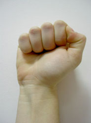
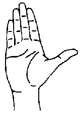
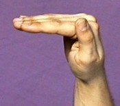
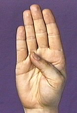
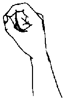
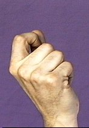
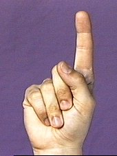
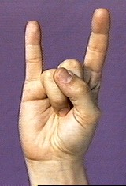
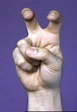
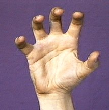

Glossing system used for technical signs
David Bar-Tzur
Created 5/24/1999
Key to abbreviations and symbols (Cokely-Baker2 & Bar-Tzur)
- "all"
- sign is swept to the right, as if performing the action for everyone (on everything) at the same time
- alt.
- alternating, that is executed by DH, then NDH, then DH, as in PEOPLE
- antisymmetrically
- hands behave like the opposite of a mirror image, as in WIND
- [As]3
- the A handshape but the thumb is tucked against the index finger
- away
- away from signer, as in "PO away"
- [B]3
- the B handshape but the thumb is not tucked into the palm, as in SCHOOL
- [B^]1
- the handshape is modified so that fingers are held at 90º angle to palm, as in EQUAL as illustrated with one hand in this entry
- [Bb^] or [B||]
- is the handshape for MEETING when it is halfway closed
- [Bb]1
- the B handshape with the thumb tucked into the palm as in TROUBLE or WORRY
- [bC]
- the C handshape with only the thumb and index
fingers extended and curled, called "baby C", as in the DH of WORD.
- [bO]3
- the O handshape with only the thumb and index fingers extended and curled, called "baby O", as in EXACT
- [bX]
- thumb is placed over the middle joint of [X] as
in some variants of CONTROL (as if holding onto the reins)
- CCW
- counterclockwise (as seen from above or from DS) as in WE. Note that this is for the signer who is right-handed. CCW for the left-handed will become CW and vice versa. I devised a handedness-neutral notation, but it is too complicated and therefore confusing.
- ctr
- center
- CW
- clockwise (as seen from above or from DS) as in THEREABOUTS/APPROXIMATELY. Note that this is for the signer who is right-handed. CW for the left-handed will become CCW and vice versa. I devised a handedness-neutral notation, but it is too complicated and therefore confusing.
- DFT
- fingertips of dominant hand
- DH
- dominant hand
- dorsal side
- not the palm side, but the other side of the hand
- DPO
- dominant palm orientation
- DS
- dominant side (right if you are right-handed, left if you are
left-handed)
- "each"
- sign is repeated while moving towards the dominant side
- flick index finger1
- The second picture has the PO wrong, but you get the idea; as in UNDERSTAND
- FO
- fingertip orientation (if fingers were extended), so that
EQUAL might be mistaken as FOs ><, but linguists would call the FO up
- FT
- fingertips
- HON.INDEX
- The honorific index points to things with the FT of [B] with its palm upturned.
- [horns]1
- handshape where the index and pinky fingers are extended, as in MOCK
- hu
- a sudden intake of air with rounded lips as in CRAZY-FOR/WOW
- [ILY]
- thumb, index and pinkie finger extended, as in I-LOVE-YOU
- [IRY]
- thumb, index, middle finger and pinkie finger extended, and index and middle fingers crossed, as in SPACE-SHUTTLE
- ITALICS
- sign this with NDH
- mm
- lips are pouted to show regularity
- lf
- left
- NDPO
- non-dominant palm orientation
- NDFT
- fingertips of non-dominant hand
- NDH
- non-dominant hand
- NDS
- non-dominant side
- [open 8]
- the handshape for the sign FEEL
- "over time"
- sign is repeated with circular motion to show action happens over a long time period, at least psychologically
- PO
- palm orientation
- POSS.
- possessive, that is, [B], PO towards whatever is being referenced
- pronate
- hand is twisted so that PO is down or away from the signer, as in lying prone before the emperor
- RECT-CL
- (2h)L, PO away, FO up, touch like FTs and separate while closing to (2h)bO to trace out a rectangle in air
- rt
- right
- "step by step"
- sign is executed slowy in several small steps, as in PROCESS
- supinate
- hand is twisted so that PO is up or towards the signer, as in COMPLETE; think of SuPINate as being on the SPINe.
- symmetrically
- hands behave as in a mirror image, as in the sign SEPARATE
- th
- the tongue sticks out slightly while the mouth forms the phoneme "th", showing carelessness or inattentiveness to detail or rightness
- tl
- stands for "tight lips" which shows seriousness or effort
- [V:]1
- the colon means curl the fingertips of the handshape, as in BLIND
- wg
- wiggle fingers, as in STUDY, not as in FIVE-HUNDRED
- whu
- air is blown out of rounded lips as in the sign HAVE-NONE
- [X]
- a letter or number inside brackets indicates a handshape
- [X dot]
- the handshape is modified by extending thumb, as in the [A dot] of REFUSE
- X,Y
- first handshape is for NDH, second is for DH, as in "leak from hole": F,4-CL
- X>Y
- first handshape becomes second handshape as in "disappear into the distance": G>bO-CL
- zz
- teeth are clenched
- (1h)
- one hand is used instead of the usual two-handed sign
- 1outline-CL
- the index finger traces (outlines) the shape of an object, as in ELLIPSE, which could be glossed as 1-CL'ellipse'.
- 1x, 2x, 3x
- once, twice, three times (sometimes notated x1, x2, x3); used instead of "+" when sign is usually produced twice, but now once (or vice versa), or in descriptions that do not use the gloss, so there is no sign to add "+" to
- (2h)
- both hands have the same handshape or the usual one-handed sign is produced with both hands
- [5:]1
- the colon means curl the fingertips of the handshape
- [5^]3

- the carot (^) means bend the fingers at the knuckles, but keep them straight as in the final position of SUNSHINE
- :
- The fingertips are curles as in [5:] for ANGRY
- @
- at, as in SURGERY@brain for "brain surgery"
- #
- lexicalized fingerspelling (previously called fingerspelled loan sign), as in #OK for OKAY.
- *
- sign is executed with short forceful movement, as in MAD* to
show that someone is "furious"
- >
- towards, as in "> DS"
- ><
- face each other, as in POs ><, which is the case for the sign MEET
- ^
- the handshape is modified so that fingers are held at 90¼ angle to palm, as in the (2h)[B^] of EQUAL
- ~
- The two signs are blended together smoothly
- (<) GLOSS1, (>) GLOSS2
- sway body to NDS and sign GLOSS1, then sway body to DS and sign GLOSS2
Glossing techniques (Cokely-Baker, Bar-Tzur)
- Each sign is represented by an English word or phrase in all capital letters and may be in bold: ME SPEAK HEBREW CAN.
- Initialized signs are indicated by the substituted handshape, a dash, and the base sign: A-CALCULATE for "algebra".
- Fingerspelled vocabulary is indicated by bolded upper case letters separated by dashes: P-H-A-S-E for "phase". A single fingerspelled letter is enclosed in quotes: "E".
- Signs that are generated by repetition of base signs, are indicated with a plus sign. HELP++ for "helpful".
- Signs that are blends of other signs can be represented by a tilda (~) TRUE~WORK for "actually".
- If a sign uses parts of the body as a direct object, the sign is followed by an at symbol (@) and the body part described in lowercase letters: HURT@(left hip) for "my left hip hurts".
- If spatialization and directionality are used, "lf"," rt", "ctr" can be used for "left", "right", and "center".
More detailed description (Bar-Tzur)
- For signs that can not be related to signs that have a standard gloss, a more complex system is used.
- If the sign is two-handed and the handshapes are the same, (2h) is used and then the handshape is enclosed in square brackets. (2h)[F] would be the handshapes for the sign JUDGE.
- If two-handed, but the handshapes are different, DH (dominant hand) is used, indicating the handshape, later listing NDH (non-dominant hand). NDH may be omitted since the other handshape must now be on the NDH. For POPULAR, the handshapes would be NDH [1] and DH [5].
- Palm orientations are specified: PO up, PO down, PO > NDS (non-dominant side), PO > DS (dominant side), PO towards (towards signer), PO away (away from signer), POs >< (palms face each other). Here are the POs for some more signs: STOP (NDPO up, DPO > DS), WARN (both hands PO down), MEET (POs ><), EMERGENCY (PO away), MIRROR (PO > signer).
- FO specifies fingertip orientation, similarly to PO. Remember FO is defined in linguistics as the direction the fingertips would point if they were extended, not based on a closed HS, so that EQUAL would be FOs up, not FOs ><.
- If handshapes are used as classifiers, information showing how the classifier moves is described in single quotes, such as 1-CL'person walk up to me suddenly'.
- If the NDH stays in place from a previous sign while the DH continues a new sign, a dashed arrow can show the duration of the hold.
- Examples of a full glossing would be: (1) RACE/COMPETE - (2h)[A], POs ><, FOs away, alt. move FO from up to away with hands held close together. (2) AWFUL - DH [8], PO > NDS, FO up, is held over shoulder and moves away while flicking middle finger to become a [5]. (3) WIND - (2h)[5], POs ><, FOs away, sway antisymmetrically from side to side while pronating and supinating the palms.
Footnotes
1. ASL University: Handshapes
2. As described in Baker-Shenk, C. & D. Cokely (1991). American Sign Language: A teacher's resource text on grammar and culture. Clerc. ISBN 093032384X.
3. Turkish Sign Language.

Home